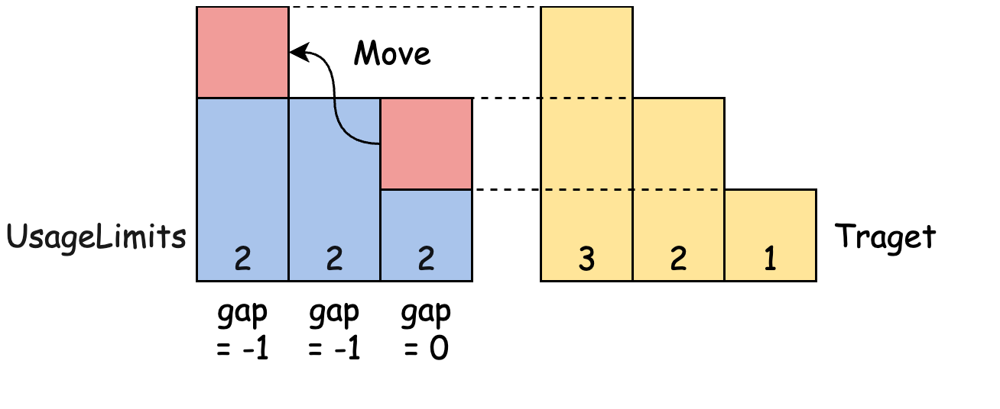
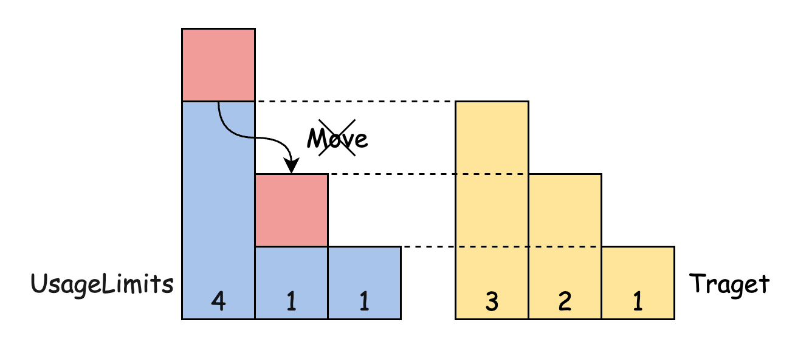

LC 2790. 长度递增组的最大数目
https://leetcode.cn/problems/maximum-number-of-groups-with-increasing-length/description/
我看了题解里面两种解法，感觉都挺好的
- 二分 https://leetcode.cn/problems/maximum-number-of-groups-with-increasing-length/solutions/2355580/pai-xu-er-fen-tu-jie-ban-by-yzq-a-smlx/
- 贪心 https://leetcode.cn/problems/maximum-number-of-groups-with-increasing-length/solutions/2355412/tan-xin-by-kuang-qie-2-fw0r/
二分的思路就是检查K个长度是否可以达到，我们可以从最大的往前填补：
- 如果当前值超过预期值，那么多余的不能被使用。
- 如果当前不够预期值的话，那么可以从后面的找补回来。
- 但是填充的时候应该使用当前值。


class Solution: def maxIncreasingGroups(self, usageLimits: List[int]) -> int: usageLimits.sort(reverse=True) def test(K): gap = 0 for x in usageLimits: gap = min(gap + x - K, 0) # 只使用当前值去填充，之前多出来的会回填到之前的空处。 # 因为我们这里是从大到小填充，所以肯定不会出现重叠的情况。 if K > 0: K -= 1 return gap >= 0 s, e = 1, len(usageLimits) while s <= e: k = (s + e) // 2 if test(k): s = k + 1 else: e = k - 1 return e
贪心则是从小到大进行填充：
- 如果当前填满的话，那么将多余的放在后面，并且将预期值+1
- 因为后面的数更大，会尽量用后面的数去填，所以不会出现重叠
class Solution: def maxIncreasingGroups(self, usageLimits: List[int]) -> int: usageLimits.sort() xs = usageLimits.copy() n = len(xs) xs.append(0) ans = 1 for i in range(n): if xs[i] >= ans: xs[i] -= ans ans += 1 xs[i + 1] += xs[i] return ans - 1